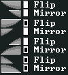
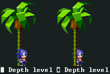

Documentazione ufficiale di XeEngine
Sommario
Introduzione
XeEngine è un framework, formato da una serie di librerie che aiutano lo sviluppo di giochi o software principalmente 2D. Il framework è pensato per essere multipiattaforma ed ha un livello di astrazione tale da offerte funzionalità che comunicheranno con il sistema operativo su una determinata macchina senza conoscere questi ultimi. Il framework offre un sistema a livelli, che aiuta lo sviluppo in base a ciò che lo sviluppatore cerca. E' possibile usare lo XeSDK per sviluppare direttamente con codice nativo C++, XeScript per generare del bytecode compatibile con ogni macchina senza necessariamente ricompilare il codice per ognuna, XeWidget per creare applicazioni basati su bottoni e caselle, ed infine XeEditor, l'editor integrato che può aiutare allo sviluppo di giochi. Tutto questo insieme forma XeEngine.
NOTA: XeEngine è un prodotto ancora in fase di sviluppo, perciò la documentazione potrebbe non essere aggiornata instantaneamente in base alle ultime aggiunte nell'eseguibile o viceversa.
Prerequisiti
I requisiti minimi sono 64MB di memoria RAM, un processore da almeno 0.5 GHz ed una scheda video da 32MB che supporta OpenGL 1.1 e / o DirectX 9.0a.
I requisiti ottimali invece, sono 128MB di memoria RAM, un processore da 1 GHz ed una scheda video da 128MB che supporta OpenGL 2.1 e / o DirectX 9.0c assieme a Pixel Shader 2.0.
Soddisfando i requisiti ottimali, si ha una gestione nativa delle palette, incrementando enormemente le performance. Nel caso dei requisiti minimi il sistema di palette viene emulato, ma questa tecnica non garantisce performance soddisfacenti.
Come sistema operativi e macchine, la build corrente è stata provata solo su una macchina avente Microsoft(r) Windows 8, ma è garantita la compatibilità anche da Windows XP in poi. Sono in programma delle cross-builds per sistemi Unix, Android, Windows Phone 8, Windows RT e Raspberry Pi. Non ci sono piani per i sistemi Mac OS X e iOS.
XeSDK
XeSDK è un Software Development Kit sviluppato in C++11. Per includerlo nel proprio progetto, includere l'header XeSDK.h e linkare la liberria libXeSDK.lib.
La versione correntemente in sviluppo richiede il linguaggio di programmazione C++ e un IDE basato sul compilatore MVCPP, come ad esempio Visual Studio.
XeWidget è una liberira per creare delle interfacce grafiche all'interno di XeEngine. Essa fornisce una serie di controlli (chiamati Widget) che serviranno per la creazione di finestre, caselle di testo, caselle di spunte, bottoni e molto altro.
XeEditor
Lo XeEditor è un editor integrato nel gioco, disponibile solo nella modalità Developer dell'eseguibile XeEngine.

Operazioni come flipping e mirroring sono supportate sui singoli tile grazie alle apposite checkbox

Il Depth level è molto utile nel caso si vuole specificare se un determinato tile è presente avanti o dietro il livello delle entità. Questo si può applicare in ogni layer di una singola mappa.
L'Hitbox editor
TODO
La modalità game
TODO
Tipi di file
TODO
Fisica e collisioni
Variabili da impostare per ogni oggetto:
- acceleration, velocità di accelerazione di un oggetto.
- deceleration, velocità di frenata.
- friction, forza di decelerazione dell'oggetto quando esso è sul terreno.
- minspeed, velocità minima dell'oggetto. abs(inertia) non può essere minore di esso.
- maxspeed, velocità massima dell'oggetto. abs(inertia) non può essere maggiore di esso.
- gravity, forza di gravità che trascina l'oggetto verso il basso. Teoricamente il valore di gravità è unica e l'oggetto cade in base al suo peso, ma per semplicità di progettazione si è deciso di adottare solo questa variabile.
- maxgravity, velocità gravitazionale massima.
- jump, forza del salto.
- jumpmin, numero di pixel minimi per il salto.
- airaccmin, troppo difficile da spiegare a parole WTF
- brake, se abs(inertia) >= brake, allora fa vedere l'animazione della frenata.
- ducking, se abs(inertia) < ducking, allora l'oggetto può eseguire le funzioni LookDown e LookUp.
Variabili di uso interno dell'Engine
- inertia, velocità dell'oggetto. Questa è la variabile che è influenzata da acceleration, deceleration, friction e simili.
- speedx, velocità X dell'oggetto, dipende da inertia ed angle.
- speedy, velocità Y dell'oggetto, dipende da inertia ed angle.
- angle, angolo di rotazione dell'oggetto. Utile per trasformare inertia in speedx e speedy o per descrivere come l'oggetto si deve comportare con le Field collision.
Terminologie
- Camera, è quell'area di visualizzazione del livello che solitamente segue un oggetto. I suoi parametri sono le coordinate X, Y e Z.
- BPP (Bit Per Pixel), quanto un singolo pixel di un'immagine prende di spazio espresso in bit.
- Tile, una singola immagine quadratica grande 16x16 o comunque multipla di 16.
- Palette, una riga di colori a cui un Tile di 4bpp o 8bpp fa riferimento. Una palette contiene 256 colori.
- CLUT (Color Look-Up Table), o anche tabella di colori, è una raccolta di palette.
- CLUT 3D, tabella tridimensionale di colori dove la dimensione X è il colore al quale un singolo pixel fa riferimento, la dimensione Y è la palette correntemente selezionata e la dimensione Z è la CLUT correntemente selezionata
- Tilesheet, raccolta di Tile posizionata in una texture a tre dimensioni. Una tilesheet può avere una dimensione espressa in Tile di 16x16 ed una profondità da 1 ad un massimo di 256
- Chunk, un blocco quadratico di dimensione 8x8 tile (o comunque un multiplo di 2). Ogni Tile contenuto in un Chunk ne descrive a quale Palette fare riferimento, il tile di riferimento nella texture ed altre proprietà quali la profondità, Flip e Mirror e proprietà del percorso.
- Scene, è un blocco di dimensione quadratica 4x4 Chunk.
- Flip, una tecnica di visualizzazione che consente di ruotare orizzontalmente o verticalmente di 180° una immagine. Soliamente vengono usati i termini FlipX (o Mirror) o FlipY per rappresentare il tipo di rotazione.
- Hitbox, è quell'area che genera un evento di collisione se condivide almeno uno stesso pixel nell'area di gioco
- Field collision, è una Hitbox che avviene tra un oggetto ed il terreno. L'oggetto non potrà mai passare attraverso questo tipo di Hitbox. Ogni Field collision ha il proprio flag di evento ed una propria angolazione verticale ed orizzontale con una precisione di 1,411
- Entity collision, è il tipo di collisione che avviene tra due entità, generando un evento.
- Layer, un foglio virtuale bidimensionale con una sua dimensione espressa in Scene che raccoglie un insieme di Chunk. Questo stato mette a disposizione un intero livello o sfondo.
- Layout, descrive il modo con cui i Chunk sono collocati in un Layer.
- Layout loop, è una tecnica che permette di ripetere il livello dall'inizio una volta arrivato agli estremi di un lato del Layout (vedere Labyrinth Zone di Sonic 1 e Sky Sanctuary di Sonic & Knuckles). Genericamente è usato per i Layer di background.
- Layer boundary, bordo virtuale di un Layer. La telecamera può agire solo all'interno del Layer boundary ed ogni entità (tranne eccezioni se specificato) viene distrutta se fuori.
- Room, una raccolta di fogli virtuali dove ne sistema la loro priorità. Una Room ha una propria posizione e dimensione espressa in Scene.
- Map, la mappa di un livello. Ogni mappa ha una propria posizione espressa in Scene che la colloca in un punto specifico del World (vedi giochi come Metroid o Castlevania). Ogni Map contiene un insieme di Room.
- World, chiamata anche World Map, è l'intero mondo di gioco. Contiene un insieme di Map.
- Layer deformation, chiamato anche Parallax, è una tecnica che permette di deformare in linee orizzontali un Layer. Ogni linea orizzontale è spostata con una certa velocità in base alla posizione della Camera o in base ad una propria velocità fissa. E' frequentemente utilizzato nei giochi di Sonic the Hedgehog nei background o sott'acqua per il foreground.
- Collision index, è quella tabella che descrive quale Hitbox di tipo Field collision è associata ad un singolo Tile.
- Path, è un percorso che descrive quale dei due Collision index un tile deve utilizzare. Utile per esempio per i loop in Sonic o per i tubi in Chemical Plant di Sonic 2.
- Zone, chiamato anche Stage o Level, è una zona è una raccolta di Act. Rappresenta un singolo livello di gioco.
- Act, è un insieme di elementi da caricare, come Tilesheet, CLUT 3D, Map, Collision index etc. .
- Node, è un generico oggetto privo di funzionalità e collisioni. Usa coordinate assolute ed è privo di texture, animazioni ed effetti. Può avere nodi figli e nodi padri.
- Sprite, sottoclasse di Node, è un'immagine statica che ha una texture, una serie di effetti ed animazioni.
- Entity, sottoclasse di Sprite, è un oggetto dotato di Script, di una serie di Hitbox di tipo Entity collision e di una propria fisica.
- Script, è un listato di operazioni programmate. Può essere associato ad un Act o ad un Entity.
Crediti
XeEngine, XeSDK, XeWidget, XeEditor e XeScript sono prodotti interamente sviluppati da Luciano Ciccariello (Xeeynamo). Per maggiori informazioni è possibile contattarmi in privato via e-mail all'indirizzo xeeynamo@hotmail.com. Se parte del prodotto, risorse del gioco o dell'editor e/o questa documentazione è stata fornita senza permessi, per favore contattatemi all'indirizzo sopra riportato.
{kind=link}
{kind=link}